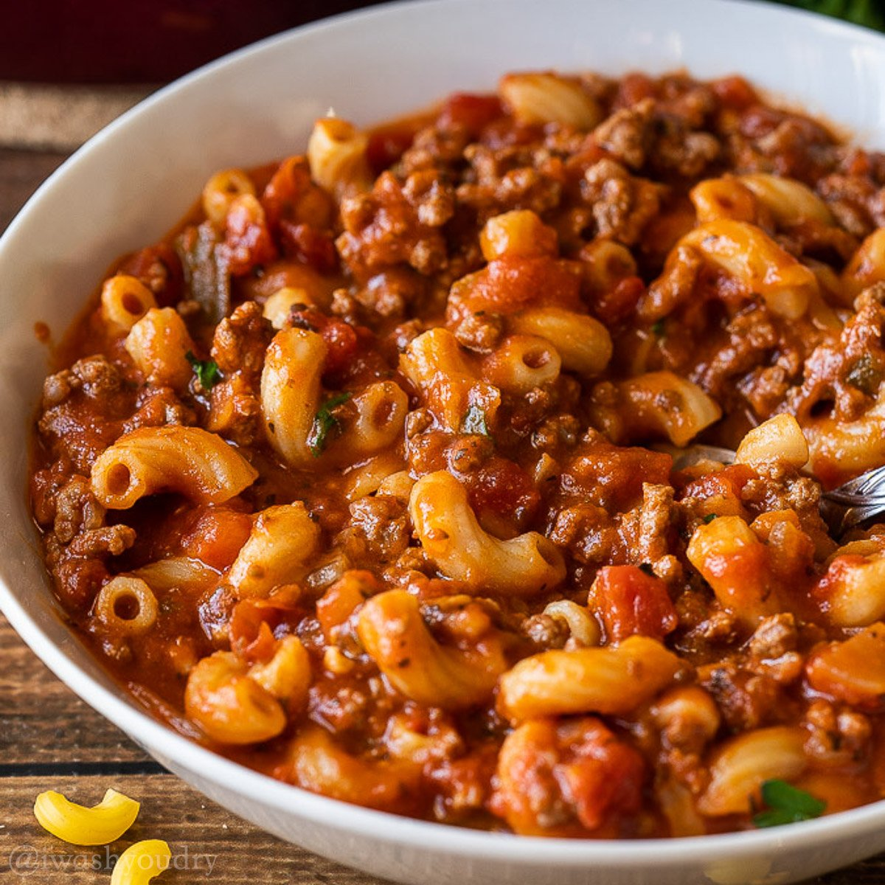

<!DOCTYPE html>
<html lang="en">
<head>
    <meta charset="UTF-8">
    <meta name="viewport" content="width=device-width, initial-scale=1.0">
    <title>Document</title>
</head>
<body>
    
</body>
</html>
<body>
    <h1>Goulash</h1>
    
    <p>Goulash is a comforting dinner idea made with ground beef, macaroni pasta and <br>cheese in a flavorful tomato-based sauce.<br> This easy one pot meal is ready in 30 minutes!</p>
    <ul><h2>Ingridients</h2>
        <li>Ground Beef</li>
        <li>Onion and Garlic</li>
        <li>Bell Peppers</li>
        <li>Beef Broth</li>
        <li>Diced Tomatoes and Tomato Sauce</li>
        <li>Worcestershire Sauce</li>
        <li>Seasonings</li>
        <li>Macaroni Pasta</li>
        <li>Cheddar Cheese</li>
    </ul>
    <ol><h2>How to make goulash</h2>
        <li>Brown the ground beef in a Dutch oven or other large, heavy pot or skillet.</li>
        <li>Add the onion and bell peppers and cook until softened. Then add the garlic and cook, stirring, for 30 seconds.</li>
        <li>Stir in the beef broth, diced tomatoes, tomato sauce, Italian seasoning, Worcestershire sauce, garlic powder, salt and pepper.</li>
        <li>Stir in the uncooked pasta. Bring the pot to a simmer. Cover the pot and simmer for 8-10 minutes, stirring often to keep the pasta from sticking to the bottom of the pot.</li>
        <li>Remove the pan from the heat and stir in the shredded cheddar. Garnish with fresh chopped parsley and serve.</li>
    </ol>
</body>
